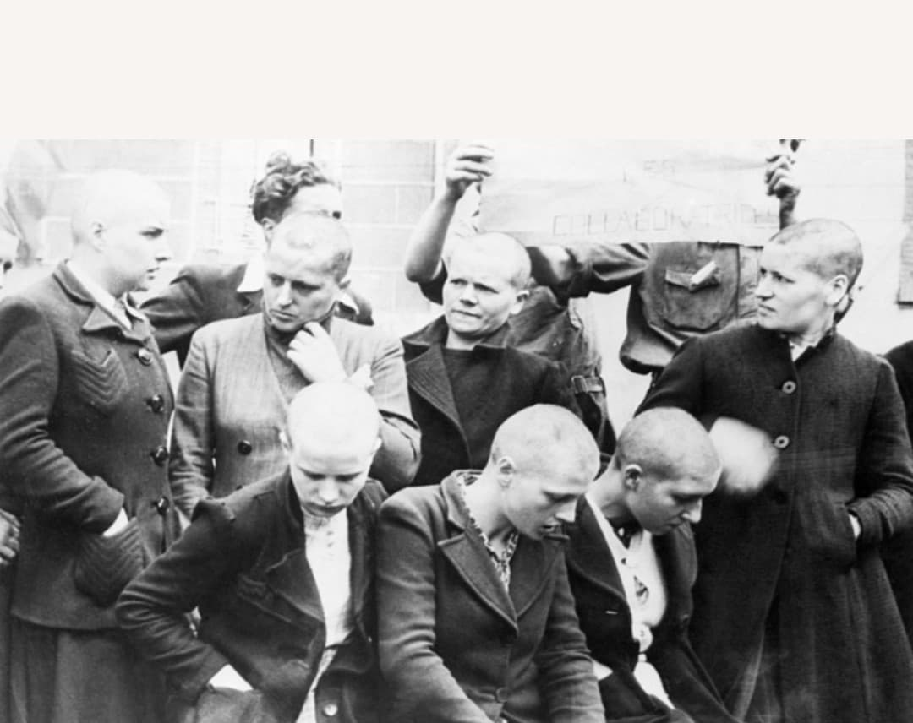
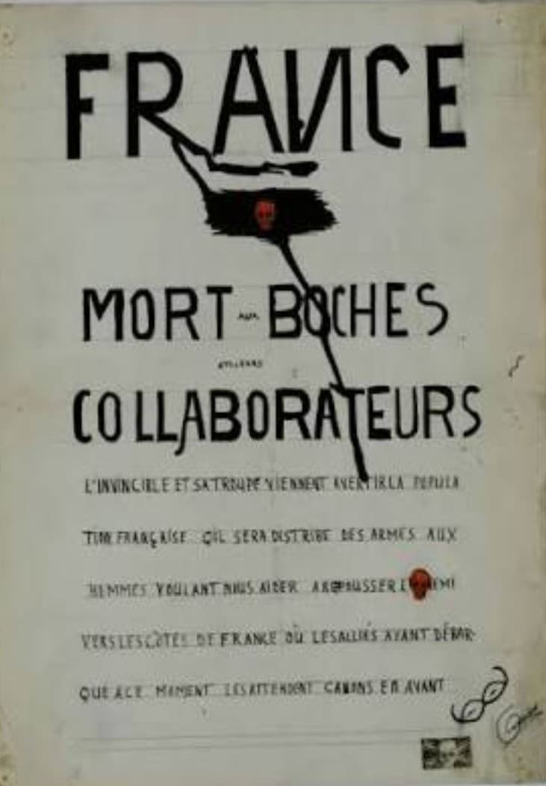
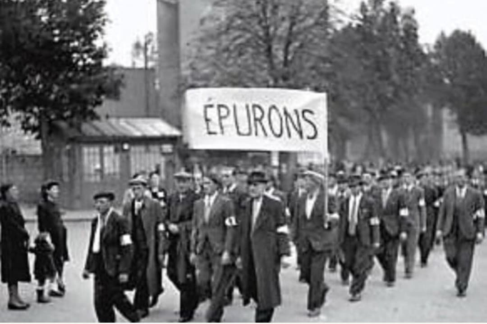
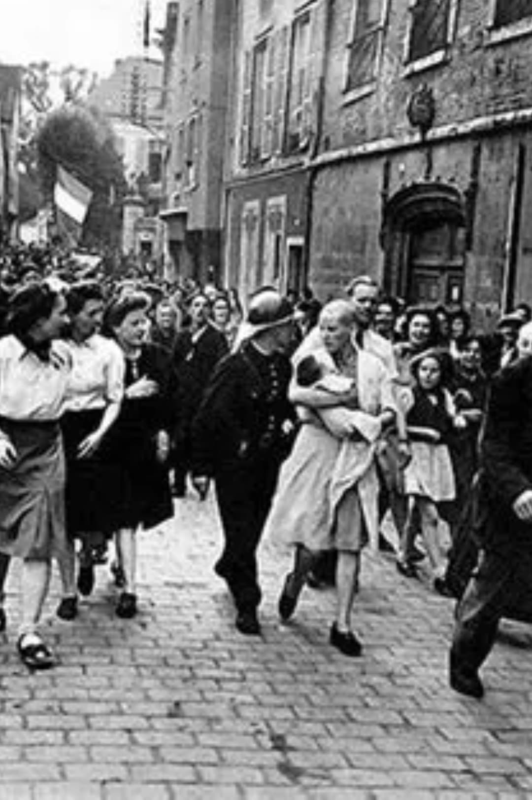
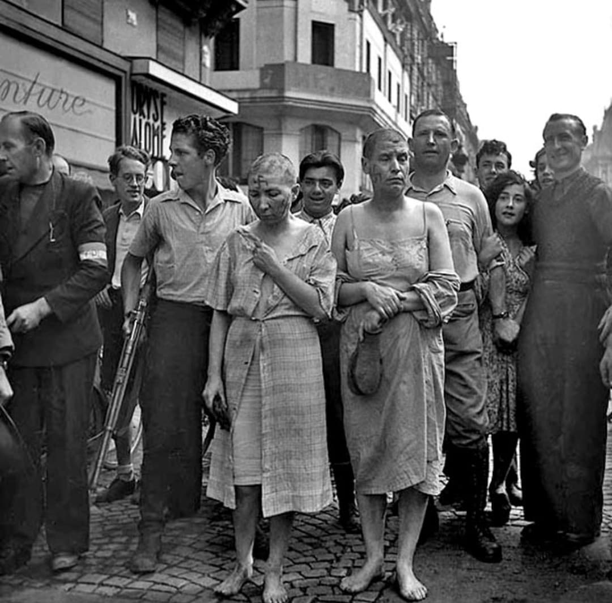
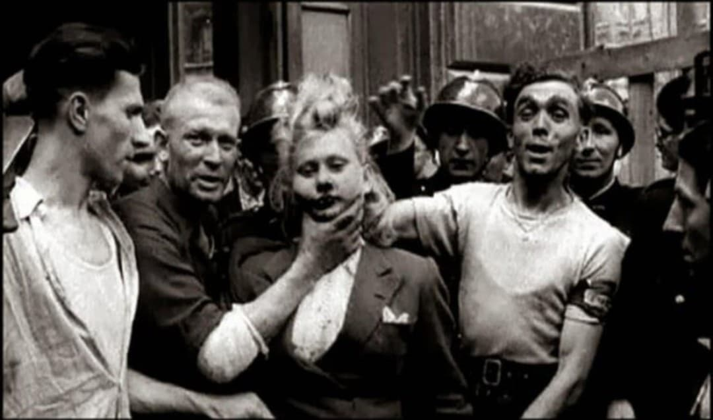
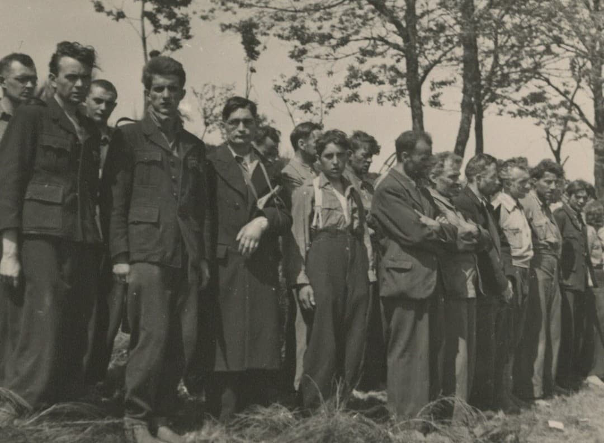
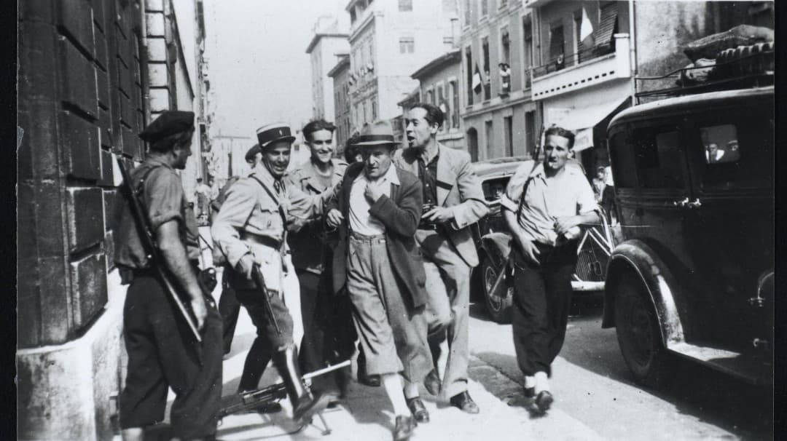
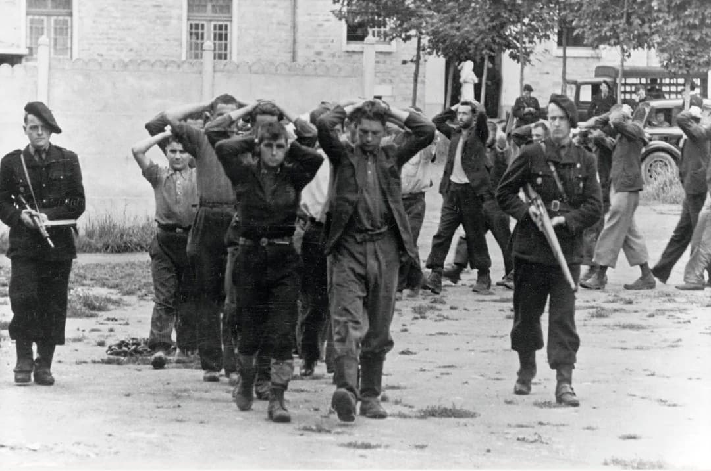

Introduction
À l’été 1944, la France se libère de quatre années d’Occupation allemande. La joie immense de la Libération s’accompagne d’une période de tensions, de règlements de comptes et de violences spontanées : c’est l’épuration. Elle vise les personnes accusées d’avoir aidé l’occupant, qu’il s’agisse de collaboration politique, économique, policière ou intime.
L’épuration se déroule en deux phases :
• L’épuration sauvage (été 1944) : actions spontanées de la population, humiliations, arrestations improvisées, tontes publiques, exécutions sommaires.
• L’épuration légale (1944–1949) : tribunaux, enquêtes, commissions, condamnations officielles, rétablissement de l’État de droit.
Cette fiche distingue les traitements infligés aux femmes et aux hommes, car ils répondent à des logiques différentes : l’une symbolique et sexiste, l’autre répressive et politique.




Ce qu’on faisait aux femmes
Les femmes accusées d’avoir entretenu des relations avec des soldats allemands sont punies par la tonte publique. On les accuse de « collaboration horizontale ». Cette accusation, souvent basée sur des rumeurs, est profondément sexiste : elle considère que la femme trahit la nation par son corps.
La sanction est avant tout symbolique : on ne les exécute pas, mais on les humilie devant toute la communauté. Leur corps devient un espace de vengeance collective.
Tonte publique
La tonte est un rituel de purification : on rase la tête de la femme pour effacer la « souillure » de l’Occupation. La foule assiste, commente, photographie. La femme perd son identité, son intimité, sa dignité.

Défilé forcé
Après la tonte, les femmes sont souvent contraintes de défiler dans les rues, parfois avec un enfant dans les bras. La foule les insulte, les montre du doigt. Ce défilé est une mise au ban publique, destinée à les exclure durablement de la communauté.

Tonte en cours
Certaines photos montrent la tonte en train de se dérouler : la femme est maintenue, entourée d’hommes qui assistent à la scène. La tonte devient un spectacle, un rituel collectif de vengeance.

Ce qu’on faisait aux hommes
Les hommes sont punis pour leurs actes : participation à la Milice, dénonciations, travail pour la Gestapo, collaboration économique ou policière. La sanction est plus répressive : arrestations, internements, procès, parfois exécutions sommaires.
Contrairement aux femmes, les hommes sont rarement humiliés publiquement. Ils sont jugés pour leurs actions, non pour leur sexualité.
Arrestations
Les résistants (FFI) arrêtent les collaborateurs dans les rues, parfois sous les yeux de la foule. Les hommes sont escortés, fouillés, parfois frappés. Ces arrestations marquent la reprise en main de l’espace public par les forces de la Libération.


Humiliation publique
Certains hommes sont exposés dans les rues, pieds nus, tête rasée, entourés de civils et d’hommes armés. Cette humiliation est moins fréquente que pour les femmes, mais elle existe dans certaines régions.

Miliciens capturés
La Milice française, police politique de Vichy, est considérée comme l’un des groupes les plus dangereux. Ses membres sont souvent arrêtés, jugés rapidement, parfois exécutés. Leur sort est plus tragique que celui des femmes tondues.

Page du Musée HOP WW2 – Épuration 1944